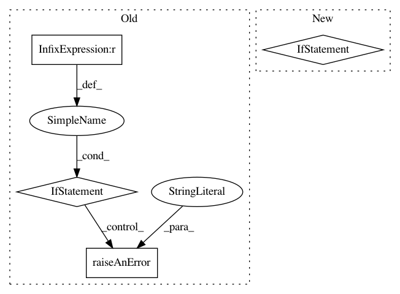

79c1d265126b3e1551e60d503817de830dac241f,framework/Samplers/Stratified.py,Stratified,localInputAndChecks,#Stratified#Any#Any#,90
Before Change
Sampler.readSamplerInit(self,xmlNode)
Grid.localInputAndChecks(self,xmlNode, paramInput)
pointByVar = [len(self.gridEntity.returnParameter("gridInfo")[variable][2]) for variable in self.gridInfo.keys()]
if len(set(pointByVar))!=1:
self.raiseAnError(IOError,"the latin Hyper Cube requires the same number of point in each dimension")
self.pointByVar = pointByVar[0]
self.inputInfo["upper"] = {}
self.inputInfo["lower"] = {}
After Change
pointByVar = [len(self.gridEntity.returnParameter("gridInfo")[variable][2]) for variable in self.gridInfo.keys()]
lenPBV = len(set(pointByVar))
if lenPBV != 1:
if lenPBV == 0:
// no sampled vars were given, but allow the Sampler to catch this later.
pass
else:
self.raiseAnError(IOError,"<Stratified> sampler named "{}" requires the same number of point in each dimension!".format(self.name))
else:
// correct dimensionality given
self.pointByVar = pointByVar[0]
self.inputInfo["upper"] = {}
In pattern: SUPERPATTERN
Frequency: 3
Non-data size: 4
Instances
Project Name: idaholab/raven
Commit Name: 79c1d265126b3e1551e60d503817de830dac241f
Time: 2019-11-11
Author: paul.talbot@inl.gov
File Name: framework/Samplers/Stratified.py
Class Name: Stratified
Method Name: localInputAndChecks
Project Name: idaholab/raven
Commit Name: bd64edc27a1f990698d70e2e75457597342c4b08
Time: 2017-09-07
Author: joshua-cogliati-inl@users.noreply.github.com
File Name: framework/Distributions.py
Class Name: Categorical
Method Name: initializeDistribution
Project Name: idaholab/raven
Commit Name: 09e47cabaf09c32d402e8527d3804bac5f118ccf
Time: 2018-09-04
Author: congjian.wang@inl.gov
File Name: framework/PostProcessors/DataMining.py
Class Name: DataMining
Method Name: inputToInternalForHistorySet